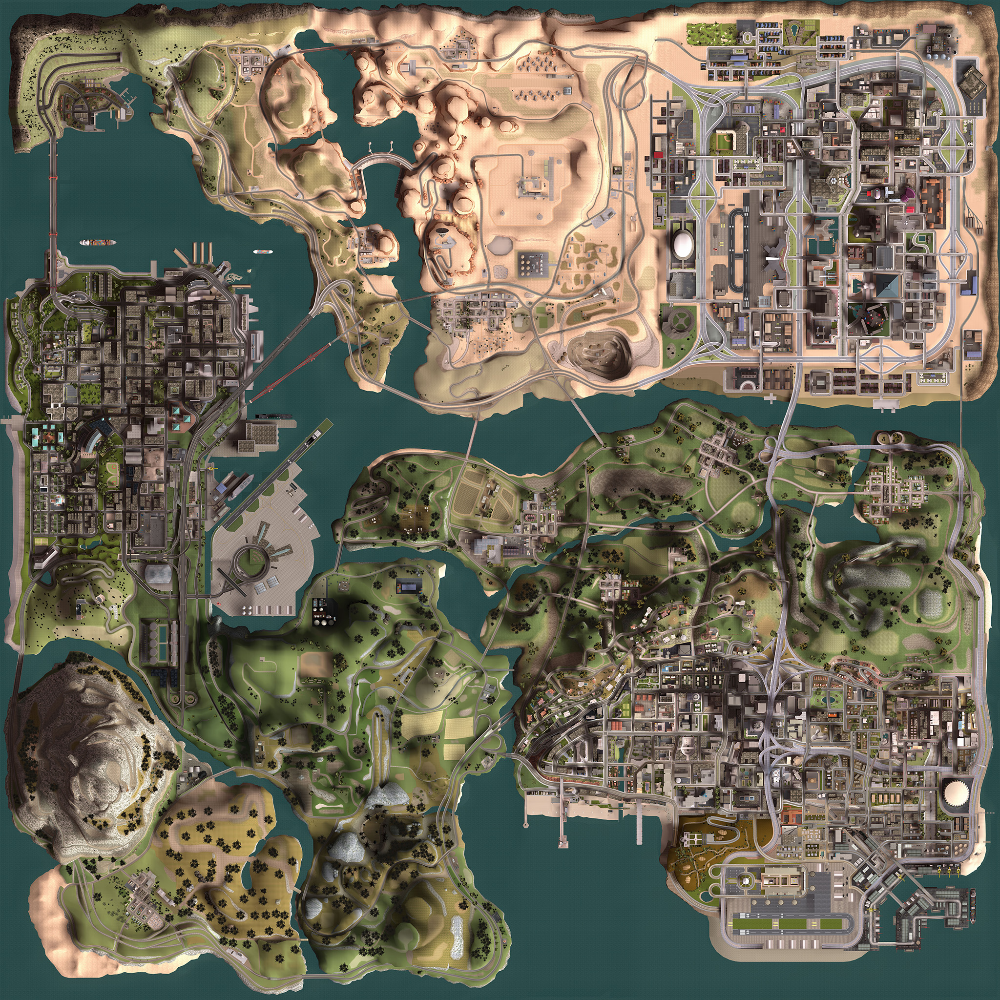

Координаты извлечены из CLEO, `main.scm` и IPL текущей установки. В документации указано 150 граффити, но в загруженных IPL найдено 144 реальных объекта граффити — шесть отсутствующих точек не добавлены.